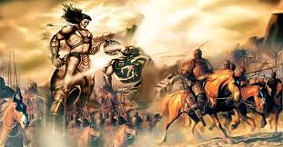

Vương họ Lý, tên Ông Trọng, người Từ Liêm, thân dài hai trượng ba thước, khí chất thẳng thắn dũng mãnh, khác với người thường.
Lúc ít tuổi làm chức sự ở huyện ấp, bị quan Đô đốc đánh đòn, than rằng:
- Người ta ở đời có tráng chí, nên như chim loan chim phượng, cất cánh một cái bay xa vạn dặm, sao lại có thể chịu để người thóa mạ, làm nô lệ cho người sao?
Bèn bỏ đi học, ngày ròng tháng rã, thông hiểu kinh sử, vào làm quan cho nhà Tần đến chức Tư Lệ hiệu úy. Tần Thủy Hoàng thôn tính thiên hạ, sai ông đem quân giữ đất Lâm Thao, thanh thế chấn động đất Hung Nô, Thủy Hoàng rất quý trọng. Đến lúc già trở về làng quê. Thụy Hoàng sai lấy đồng đúc tượng ông, đặt ở cửa Tư Mã ngoài Hàm Cung, trong bụng của tượng chứa được mấy chục người. Mỗi khi có sứ giả bốn phương đến, vua Tần ngầm sai người chui vào trong bụng của tượng, làm cho tượng cử động. Người Hung Nô trông thấy sợ lắm, cho là quan hiệu úy vẫn sống, răn dè nhau chớ có phạm vào biên giới.

Đầu niên hiệu Trinh Nguyên (785) đời vua Đường Đức Tông; Triệu Xương làm Đô hộ An Nam thường đi chơi ở trong nước ta. Một đêm thấy cùng Lý Ông Trọng nói chuyện về những điều trọng yếu trong đạo trị bình và giảng sách Xuân Thu Tả truyện. Nhân đó bèn về thăm nơi nhà cũ của ông, thì chỉ thấy sương khói ngang trời, mênh mang dòng sông, rêu phong lối đá, xanh rờn cây hoang, một đám mây lững lờ, hoa rơi trên đám cỏ. Bèn lập ra đền miếu [1], nhà cao tầng chồng, dọn lễ dâng tế. Đến khi Cao Biền đánh quân Nam Chiếu, ông thường hiển linh giúp đỡ. Biền lấy làm kinh lạ, sai thợ sửa đền miếu lại, to hơn quy mô cũ, sai tạc sơn tượng, sắm lễ dâng tế. Hương hoa không bao giờ ngớt.
Năm Trùng Hưng thứ nhất (1285), sắc phong Anh Liệt vương. Năm Trùng Hưng thứ tư (1288), gia phong hai chữ “dũng mãnh”. Năm Hưng Long thứ 21 (1313), gia phong làm Phu Tín đại vương.
Chú thích:
[1] Đền ở làng Chẽm, huyện Từ Liêm, TP. Hà Nội.